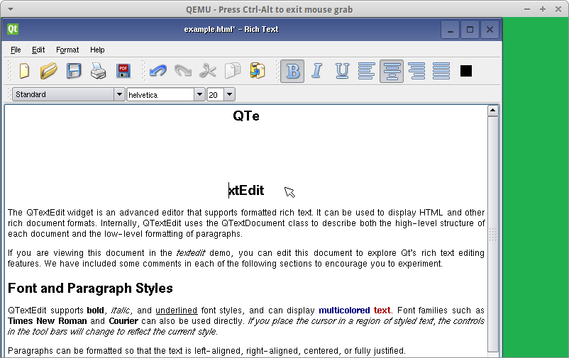

Embeded Viratualisation¶
In this lab, we get familiar with the Embedded XEN environment. First, we need to patch the current projet. Then we will try our first run of the virtualizer. We will then recompile the driver made in the last lab for the virualized kernel. Finaly we will make the driver for the non-priviliedged OS.
Workspace patching¶
First, we need to modify the repatar_sp6_buttons.c to compitle with the XEN (XEN is the virtualizer) extensions. This is done as following:
#include "reptar_sp6.h"
#if 1
#include <xen-guest/io/kbdif.h>
#include <xen-guest/console.h>
extern int omapfb_xen_switch_domain(domid_t dom);
#endif
static struct platform_device *reptar_sp6_btns;
We must then extract the Embedded XEN projet and compile it:
redsuser@vm-reds-2015s2:~/seee_student$ tar -xf embeddedxen.tar.bz2
redsuser@vm-reds-2015s2:~/seee_student$ rm embeddedxen.tar.bz2
redsuser@vm-reds-2015s2:~/seee_student$ ./buildex
...
MV xen/arch/arm/boot/Image.tmp to xen/arch/arm/boot/Image
Kernel: xen/arch/arm/boot/Image is ready
Kernel: xen/arch/arm/boot/uImage is being built...
GZIP arch/arm/boot/compressed/piggy.gz
AS arch/arm/boot/compressed/piggy.o
LD arch/arm/boot/compressed/vmlinux
MV xen/arch/arm/boot/Image to xen/arch/arm/boot/Image.final
OBJCOPY arch/arm/boot/zImage
Kernel: arch/arm/boot/zImage is ready
UIMAGE arch/arm/boot/uImage
Image Name: EmbeddedXen-4.0.2
Created: Mon May 30 21:29:42 2016
Image Type: ARM Linux Kernel Image (uncompressed)
Data Size: 4902700 Bytes = 4787.79 kB = 4.68 MB
Load Address: 80008000
Entry Point: 80008000
MV uImage to uImage.reptar
Kernel: arch/arm/boot/uImage.reptar is ready
######### WARNING Use uImage.reptar (instead of uImage)
------------------------------------------------------[ BUILDING EmbeddedXEN Hypervisor DONE ]---
We must copy the new root-fs filesystem to our workspace:
redsuser@vm-reds-2015s2:~/seee_student$ cp ~/Downloads/reptar4-sdcard.img filesystem/
Finally, we remplace the old linux kernel, with the XEN hypervisor:
redsuser@vm-reds-2015s2:~/seee_student$ mv uImage uImage.old
redsuser@vm-reds-2015s2:~/seee_student$ ln -sf embeddedxen/uimage.embeddedxen.reptar uImage
The environement it now ready to be run!
EmbeddedXEN environement test¶
We can now deploy our files (kernel module and test programs) to the new root-fs using the new version of the deploy script:
redsuser@vm-reds-2015s2:~/seee_student$ ./deploy ex
Deploying into EmbeddedXEN rootfs ...
Mounting filesystem/reptar4-sdcard.img...
SD card partitions mounted in 'boot_tmp' and 'filesystem_tmp' directories
Unmounting SD card image...
Synchronizing .img file
Unmounting 'boot_tmp' and 'filesystem_tmp'...
Done !
We can launch the EmbeddedXEN hypervisor inside QEMU using the provided stex script. It will start QEMU with the new root-fs. The deploy script has copied the EmbeddedXEN hypervisor “kernel” image to the TFTP folder. So when we will boot from U-Boot, it will be run instead of the standrad linux kernel:
redsuser@vm-reds-2015s2:~/seee_student$ ./stex
....
U-Boot 2011.09-00000-g9af6a15 (Feb 10 2015 - 16:10:59)
U-Boot code: 80008000 -> 80065570 BSS: -> 800F7C68
.....
Address in SROM is 52:54:00:12:34:56
Address in environment is e4:af:a1:40:01:fe
Reptar # boot
reading uImage
4902764 bytes read
## Booting kernel from Legacy Image at 81600000 ...
Image Name: EmbeddedXen-4.0.2
Image Type: ARM Linux Kernel Image (uncompressed)
Data Size: 4902700 Bytes = 4.7 MiB
Load Address: 80008000
Entry Point: 80008000
Verifying Checksum ... OK
Loading Kernel Image ... OK
OK
Using machid 0x2694
Starting kernel ...
Using machid 0x2694
Uncompressing Xen........ done, booting the kernel.
_____ _ _ _ ___ _______ _ _
| ____|_ __ ___ | |__ ___ __| | __| | ___ __| \ \/ / ____| \ | |
| _| | '_ ` _ \| '_ \ / _ \/ _` |/ _` |/ _ \/ _` |\ /| _| | \| |
| |___| | | | | | |_) | __/ (_| | (_| | __/ (_| |/ \| |___| |\ |
|_____|_| |_| |_|_.__/ \___|\__,_|\__,_|\___|\__,_/_/\_\_____|_| \_|
____
|___ \ __ __
__) | \ \/ /
/ __/ _ > <
|_____(_)_/\_\
(XEN) EmbeddedXEN version 2.x / original XEN base: 4.0.2
(XEN) EmbeddedXEN - Reconfigurable Embedded Digital System
(XEN) (REDS) Institute from HEIG-VD/Switzerland
(XEN) Copyright (c) 2007-2013 http://reds.heig-vd.ch
(XEN)
(XEN) Latest ChangeSet:
(XEN)
(XEN) EmbeddedXEN Hypervisor Memory Layout
(XEN) ------------------------------------
(XEN) Min page: 0x8005c (phys)
(XEN) Max page (not included): 0x80c00 (phys)
......
(XEN) OMAP clockevent source: GPTIMER1 at 32768 Hz
[DOM-0] <4>Xen Start info :
[DOM-0] <4>Magic : xen-4.0-arm_32
[DOM-0] <4>Hypercall addr: ff00d820
[DOM-0] <4>Total Pages allocated to this domain : 16384
[DOM-0] <4>MACHINE address of shared info struct : 0x8024f000
[DOM-0] <4>VIRTUAL address of page directory : 0xc0004000
...
[DOM-U] ### HELLO FROM domU !!
[DOM-U] Starting logging: OK
[DOM-U] Starting mdev...
[DOM-U] Initializing random number generator... done.
[DOM-U] Starting network...
[DOM-U] ip: can't find device 'eth0'
[DOM-U] ip: SIOCGIFFLAGS: No such device
[DOM-U] ip: can't find device 'eth0'
[DOM-U] Starting dropbear sshd: OK
[DOM-U] Starting sshd: OK
[DOM-U]
[DOM-U] *** Welcome on REPTAR (HEIG-VD/REDS): use root/root to log in ***
reptar login: root
Password:
#
# uname -a
Linux reptar 3.0.12-reptar #3 Mon May 30 21:28:37 CEST 2016 armv7l GNU/Linux
We can boserve that when U-Boot starts the uImage, it expand XEN instead of the linux kernel. We then get messages preceeded by the (XEN) header. Those are message from the EmbeddedXEN hypervisor. We then have message from the priviledged OS preceded by the [DOM-0] header.
Using a tripple CTRL+A key combination, we can switch to the un-priviliged OS:
# *** Serial input -> DOMU (type 'CTRL-a' three times to switch input to Xen).
[DOM-U]
[DOM-U] *** Welcome on REPTAR (HEIG-VD/REDS): use root/root to log in ***
reptar login: root
[DOM-U] Password:
[DOM-U] # uname -a
[DOM-U] Linux reptar 3.4.6-paravirt #3 Mon May 30 21:29:22 CEST 2016 armv7-domUl GNU/Linux
[DOM-U] #
We can see now that the console is prefixed with the [DOM-U] header and that the runing kernel is patched. We see that from the -paravirt suffis in the version number.
We can try to run the Qt demo application from Dom-0:
# ./qtrun
Cannot open keyboard input device '/dev/input/event1': No such file or directory
The demo application shows up in the QEMU windows and is responsive. But whe we run it from the DOM-U, the QEMU windows does not updates:
# [DOM-0] <4>*** Serial input -> DOMU (type 'CTRL-a' three times to switch input to Xen).
[DOM-U]
# ./qtrun
SP6 driver deployment inside DOM-0¶
In this section, we will re-compile, deploy and test the driver made in the last lab to the DOM-0 (priviledged OS).
First we need to modify the Makefile to compiles agains the new kernel. For this, we modify the line 19 of it from this:
KDIR = ../linux-3.0-reptar
To this
KDIR = ../embeddedxen/linux-3.0-reptar-dom0
We can then recompile the kernel module (a clean is required, as we have changed the target OS):
redsuser@vm-reds-2015s2:~/seee_student$ cd drivers/
redsuser@vm-reds-2015s2:~/seee_student/drivers$ make clean
make -C ../embeddedxen/linux-3.0-reptar-dom0 M=/home/redsuser/seee_student/drivers ARCH=arm CROSS_COMPILE=arm-linux-gnueabihf- clean
make[1]: Entering directory `/home/redsuser/seee_student/embeddedxen/linux-3.0-reptar-dom0'
CLEAN /home/redsuser/seee_student/drivers/.tmp_versions
CLEAN /home/redsuser/seee_student/drivers/Module.symvers
make[1]: Leaving directory `/home/redsuser/seee_student/embeddedxen/linux-3.0-reptar-dom0'
rm -f *.o
rm -f *.ko
rm -f buttons_test
rm -f usertest
rm -f Module.markers
rm -f modules.order
redsuser@vm-reds-2015s2:~/seee_student/drivers$ make
make -C ../embeddedxen/linux-3.0-reptar-dom0 M=/home/redsuser/seee_student/drivers ARCH=arm CROSS_COMPILE=arm-linux-gnueabihf-
make[1]: Entering directory `/home/redsuser/seee_student/embeddedxen/linux-3.0-reptar-dom0'
LD /home/redsuser/seee_student/drivers/built-in.o
CC [M] /home/redsuser/seee_student/drivers/reptar_sp6.o
/home/redsuser/seee_student/drivers/reptar_sp6.c: In function 'fpga_read':
/home/redsuser/seee_student/drivers/reptar_sp6.c:103:3: warning: format '%d' expects argument of type 'int', but argument 3 has type 'loff_t' [-Wformat]
CC [M] /home/redsuser/seee_student/drivers/reptar_sp6_leds.o
CC [M] /home/redsuser/seee_student/drivers/reptar_sp6_buttons.o
LD [M] /home/redsuser/seee_student/drivers/sp6.o
Building modules, stage 2.
MODPOST 1 modules
CC /home/redsuser/seee_student/drivers/sp6.mod.o
LD [M] /home/redsuser/seee_student/drivers/sp6.ko
make[1]: Leaving directory `/home/redsuser/seee_student/embeddedxen/linux-3.0-reptar-dom0'
arm-linux-gnueabihf-gcc -marm -I../embeddedxen/linux-3.0-reptar-dom0 -static buttons_test.c -o buttons_test
arm-linux-gnueabihf-gcc usertest.c -o usertest
redsuser@vm-reds-2015s2:~/seee_student/drivers$
We can now test the new comiled driver inside the Dom-0 of the hypervisor. For this we need to deploy it first and the we can run the system and load the kernel module inside the priviledged os:
redsuser@vm-reds-2015s2:~/seee_student$ ./deploy ex
Deploying into EmbeddedXEN rootfs ...
Mounting filesystem/reptar4-sdcard.img...
[sudo] password for redsuser:
SD card partitions mounted in 'boot_tmp' and 'filesystem_tmp' directories
Unmounting SD card image...
Synchronizing .img file
Unmounting 'boot_tmp' and 'filesystem_tmp'...
Done !
redsuser@vm-reds-2015s2:~/seee_student$ ./stex
...
Reptar # boot
...
[DOM-U] *** Welcome on REPTAR (HEIG-VD/REDS): use root/root to log in ***
reptar login: root
Password:
# ./qtrun
Cannot open keyboard input device '/dev/input/event1': No such file or directory
QObject: Cannot create children for a parent that is in a different thread.
(Parent is QNativeSocketEngine(0x16f4140), parent's thread is QThread(0x1523290), current thread is EvtThread(0x1752dd0)
# insmod /sp6.ko
reptar_sp6: module starting...
[DOM-0] <4>Probing FPGA driver (device: fpga)
[DOM-0] <7>Registered led device: sp6_led0
[DOM-0] <7>Registered led device: sp6_led1
[DOM-0] <7>Registered led device: sp6_led2
[DOM-0] <7>Registered led device: sp6_led3
[DOM-0] <7>Registered led device: sp6_led4
[DOM-0] <7>Registered led device: sp6_led5
[DOM-0] <4>IRQ_CTR_REG = 0x0080
[DOM-0] <6>input: reptar_sp6_buttons as /devices/platform/fpga/reptar_sp6_buttons/input/input1
[DOM-0] <4>reptar_sp6: done.
#
# ./qtrun
This demonstrate that before installing the driver, the application is un-responosive to the button actions. After installing the driver, pressing the middle button modify the text inside the application:
Dom-0 and Dom-U ineraction using para-virtualized input interface¶
TODO